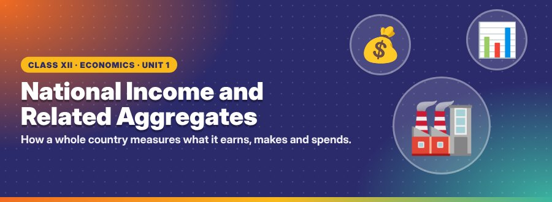
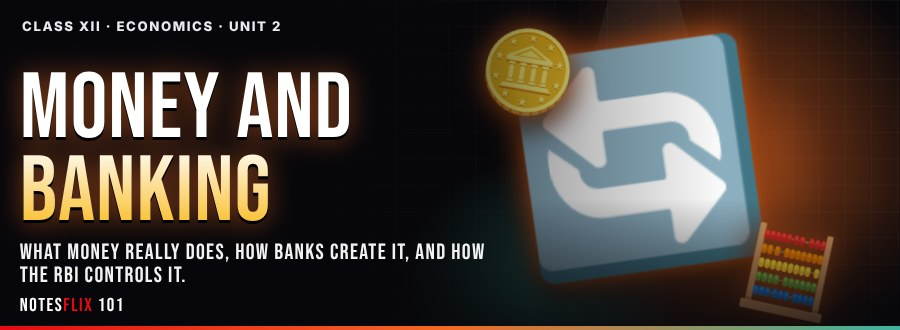
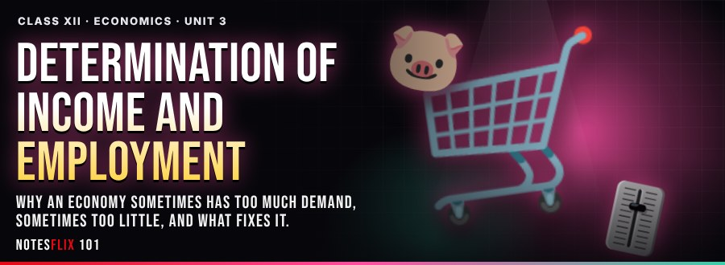
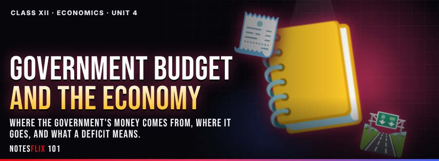
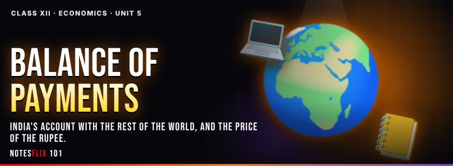
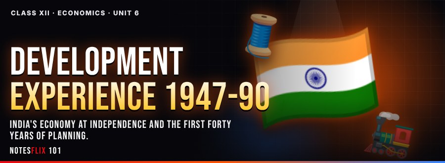
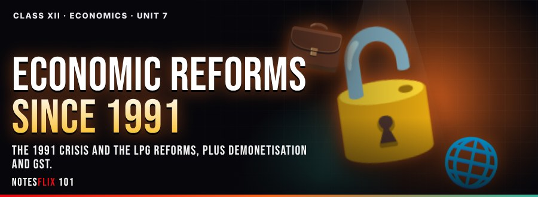
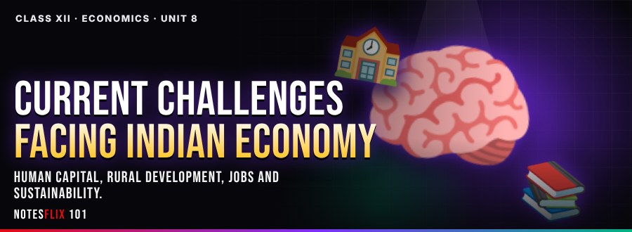
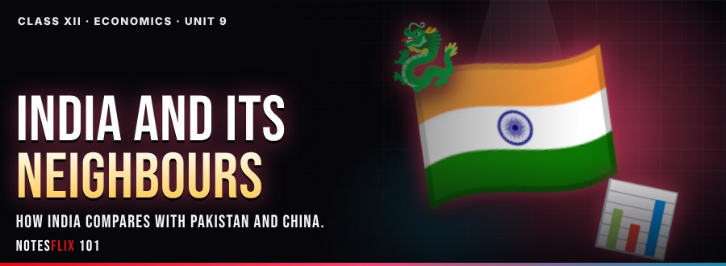

Class 12 Economics Notes
Interactive CBSE Class 12 Economics notes by Vishal Sir, C&S Classes. They follow the CBSE syllabus and NCERT textbook for Class 12. Each chapter is broken into short parts with easy explanations, picture stories, flash cards, quizzes and board-style exam questions with model answers. 1 of 28 parts are free to read with no password. The other parts open with a password from Vishal Sir.
Chapters

Unit 1: National Income and Related Aggregates
How a whole country measures what it earns, makes and spends.
- Basic Concepts of Macroeconomics (Part 1)FREE — Story, animations, 3D board, simulations and board-exam practice on What is macroeconomics, consumption goods, capital goods, final goods, intermediate goods. (25 min)
- Circular Flow of Income (Part 2)PASSWORD — Story, animations, 3D board, simulations and board-exam practice on circular flow of income (two-sector model), real flow and money flow, leakages and injections (brief). (25 min)
- National Income Aggregates (Part 3)PASSWORD — Story, animations, 3D board, simulations and board-exam practice on GDP, GNP, NDP, NNP, at market price and at factor cost, NFIA, depreciation, net indirect taxes. (25 min)
- Value Added Method (Part 4)PASSWORD — Story, animations, 3D board, simulations and board-exam practice on value added or product method, value of output, intermediate consumption, GVA at MP to NNP at FC. (25 min)
- Income and Expenditure Methods (Part 5)PASSWORD — Story, animations, 3D board, simulations and board-exam practice on income method: compensation of employees, operating surplus, mixed income, expenditure method: PFCE, GFCE, GDCF, net exports, precautions / items included and excluded. (25 min)
- Real vs Nominal GDP and Welfare (Part 6)PASSWORD — Story, animations, 3D board, simulations and board-exam practice on real and nominal GDP, GDP deflator, GDP and welfare: distribution, non-monetary exchanges, externalities. (25 min)
- Revision: Tricky Items and PYQs (Part 7)PASSWORD — Story, animations, 3D board, simulations and board-exam practice on items included / excluded with reasons, components of NFIA, choosing the method; board PYQs. (25 min)

Unit 2: Money and Banking
What money really does, how banks create it, and how the RBI controls it.
- Money: Meaning, Functions and Supply (Part 1)PASSWORD — Story, animations, 3D board, simulations and board-exam practice on barter system and its problems, money: meaning and functions, supply of money: currency held by public + net demand deposits. (25 min)
- Money Creation by Commercial Banks (Part 2)PASSWORD — Story, animations, 3D board, simulations and board-exam practice on money creation by the commercial banking system, legal reserve ratio, money multiplier. (25 min)
- Central Bank and Credit Control (Part 3)PASSWORD — Story, animations, 3D board, simulations and board-exam practice on RBI functions: bank of issue, government's bank, banker's bank, control of credit: bank rate, CRR, SLR, repo, reverse repo, open market operations, margin requirement. (25 min)

Unit 3: Determination of Income and Employment
Why an economy sometimes has too much demand, sometimes too little, and what fixes it.
- Aggregate Demand and Propensities (Part 1)PASSWORD — Story, animations, 3D board, simulations and board-exam practice on aggregate demand and its components, consumption function, APC, MPC, APS, MPS and their relations. (25 min)
- Short-run Equilibrium Output (Part 2)PASSWORD — Story, animations, 3D board, simulations and board-exam practice on aggregate supply, equilibrium: AD = AS and S = I, 45-degree line approach. (25 min)
- Investment Multiplier (Part 3)PASSWORD — Story, animations, 3D board, simulations and board-exam practice on investment multiplier and its mechanism, k = 1/(1-MPC) = 1/MPS, numericals. (25 min)
- Excess and Deficient Demand (Part 4)PASSWORD — Story, animations, 3D board, simulations and board-exam practice on full employment and involuntary unemployment, excess demand (inflationary gap) and deficient demand (deflationary gap), measures: government spending, taxes, money supply. (25 min)

Unit 4: Government Budget and the Economy
Where the government's money comes from, where it goes, and what a deficit means.
- Budget: Meaning, Objectives and Components (Part 1)PASSWORD — Story, animations, 3D board, simulations and board-exam practice on government budget: meaning, objectives, revenue receipts and capital receipts, revenue expenditure and capital expenditure. (25 min)
- Budget Deficits (Part 2)PASSWORD — Story, animations, 3D board, simulations and board-exam practice on balanced, surplus and deficit budget, revenue deficit, fiscal deficit, primary deficit, implications. (25 min)

Unit 5: Balance of Payments
India's account with the rest of the world, and the price of the rupee.
- Balance of Payments Account (Part 1)PASSWORD — Story, animations, 3D board, simulations and board-exam practice on BoP meaning and components: current account, capital account, surplus and deficit, autonomous and accommodating transactions. (25 min)
- Foreign Exchange Rate (Part 2)PASSWORD — Story, animations, 3D board, simulations and board-exam practice on fixed, flexible and managed floating rates, determination in a free market, merits and demerits of fixed and flexible rates. (25 min)

Unit 6: Development Experience 1947-90
India's economy at independence and the first forty years of planning.
- Indian Economy on the Eve of Independence (Part 1)PASSWORD — Story, animations, 3D board, simulations and board-exam practice on agriculture, industry, foreign trade under colonial rule, demographic condition, occupational structure, infrastructure. (25 min)
- Five Year Plans and Agriculture (Part 2)PASSWORD — Story, animations, 3D board, simulations and board-exam practice on Indian economic system (mixed economy), common goals of five year plans, agriculture: land reforms, green revolution, subsidies. (25 min)
- Industry and Foreign Trade 1950-90 (Part 3)PASSWORD — Story, animations, 3D board, simulations and board-exam practice on IPR 1956, small scale industries: role and importance, trade policy: import substitution. (25 min)

Unit 7: Economic Reforms since 1991
The 1991 crisis and the LPG reforms, plus demonetisation and GST.
- Liberalisation, Privatisation and Globalisation (Part 1)PASSWORD — Story, animations, 3D board, simulations and board-exam practice on the 1991 crisis, liberalisation, privatisation, globalisation: features, appraisal of LPG. (25 min)
- Demonetisation and GST (Part 2)PASSWORD — Story, animations, 3D board, simulations and board-exam practice on concept of demonetisation (2016), concept of GST. (25 min)

Unit 8: Current Challenges facing Indian Economy
Human capital, rural development, jobs and sustainability.
- Human Capital Formation (Part 1)PASSWORD — Story, animations, 3D board, simulations and board-exam practice on how people become resource, human capital vs physical capital, role in development; growth of education sector. (25 min)
- Rural Development (Part 2)PASSWORD — Story, animations, 3D board, simulations and board-exam practice on key issues: credit and marketing, role of cooperatives, agricultural diversification; organic farming. (25 min)
- Employment (Part 3)PASSWORD — Story, animations, 3D board, simulations and board-exam practice on workforce participation rate, formal and informal sectors, problems and policies. (25 min)
- Sustainable Economic Development (Part 4)PASSWORD — Story, animations, 3D board, simulations and board-exam practice on meaning of sustainable development, effects of development on resources and environment, global warming. (25 min)

Unit 9: India and its Neighbours
How India compares with Pakistan and China.
- India, Pakistan and China ComparedPASSWORD — Story, animations, 3D board, simulations and board-exam practice on development paths, growth, population, sectoral development, human development indicators. (25 min)
Frequently asked questions
Are the Class 12 Economics notes free?
1 of 28 parts are free to read with no password. The other parts open with a password from Vishal Sir.
Which syllabus do these Class 12 Economics notes follow?
They follow the CBSE syllabus and NCERT textbook for Class 12. Every chapter is split into short interactive parts with simple explanations, flash cards, quizzes and board-style exam questions with model answers.
How many chapters are covered?
9 chapters: National Income and Related Aggregates; Money and Banking; Determination of Income and Employment; Government Budget and the Economy; Balance of Payments; Development Experience 1947-90; Economic Reforms since 1991; Current Challenges facing Indian Economy; India and its Neighbours.
Is there a practice test for Class 12 Economics?
Yes. The Class 12 Economics Practice Marathon has 694 multiple-choice questions taken from the notes: a weekly marathon (30 questions, 20 minutes, the same set for everyone that week), a 10-question sprint, a 100-question mega marathon and chapter practice. A free sample is open to all; the full bank opens with the subject password.
How do I get the password for locked notes?
Message Vishal Sir of C&S Classes on WhatsApp from the Notesflix 101 website. The same password opens every locked Economics note.